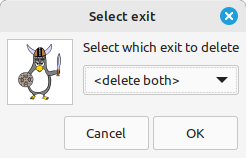
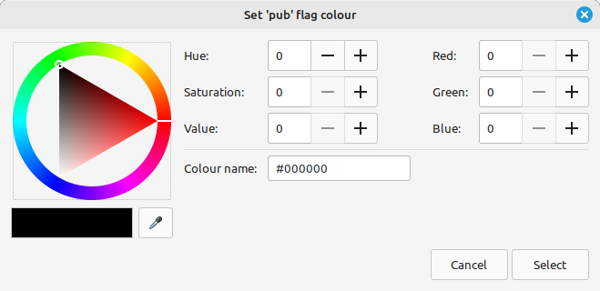
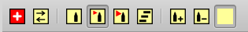

To open the automapper window, click this button in the main window or use one of the following commands:
To open the automapper window, click this button in the main window or use one of the following commands:
;openautomapper
;openmap
;oam
;map
Axmud has an extremely powerful automapper, but it won't work at all if the Locator task can't recognise the character's location (or if the Locator task isn't running at all - click the Reset Locator (RL) button to restart it).
If you're using a pre-configured world, you're good to go: you can start drawing maps immediately. If not, the current world profile needs to be configured first.
 Axmud provides a Locator wizard which can handle most of the configuration process (with just a little assistance from you). Simply click this button in the main window and follow the instructions.
Axmud provides a Locator wizard which can handle most of the configuration process (with just a little assistance from you). Simply click this button in the main window and follow the instructions.
Hint 1 The wizard has a 100% accuracy rate with some worlds, but struggles to cope with other worlds. If you have problems configuring your favourite MUD, visit us at the Axmud website and we'll try to help.
Hint 2 The wizard can learn to recognise all the components of a room statement: the room title, the verbose description, the exit list and the contents list. In most cases, the only component you really need is the exit list. If you're having problems, run the wizard again, ignoring everything except the line with the list of exits.
Hint 3 A few worlds (such as LambdaMoo and MUD1) don't use exit lists in their room descriptions. The Locator wizard won't work at these worlds, but the Automapper can still be configured correctly.
Near the top of the automapper window is a toolbar containing several buttons.

These buttons perform many of the same actions that can be performed from the window's menu.
The buttons that can't be clicked represent actions that can't be performed at the moment. When you first open the window, almost none of the buttons can be clicked.
There are too many buttons to fit on the window, so they have been divided into sets. The button on the left with arrows switches between button sets. If you click it once, the next set of buttons will appear:
If you keep clicking on the arrows button, you'll eventually arrive back at the original button set.
You can display more than one button set at the same time by clicking the red plus button.
It's not always obvious what an button does. Let your mouse hover an button for a short explanation.
Worlds can contain many thousands of rooms so it's usually necessary to divide your maps into regions. The area on the left of the window lists all the regions you've created.
The first step in drawing a new map is always to create a region.
Once you've created the first region, the map will turn from white to yellow. You can now add your first room.
There's more than one way to add a room, but this is the simplest way:
The new room will appear in the middle of the map. It should have the same number of exits as the room displayed in the Locator task's current window.
The automapper can operate in one of three modes. You can switch between them by clicking on the W, F and U buttons.
U is Update mode. As your character move around the world, the automapper will automatically draw new rooms and update existing rooms.
F is Follow mode. As your character moves around the world, the automapper tracks your location but doesn't make any significant changes to the map.
W is Wait mode. The automapper will ignore what your character is doing.
When you first open the automapper window it is in Wait mode. However, if you create a new room by right-clicking the map and selecting Add first room, the automapper automatically switches to Update mode.
The current room is always drawn in a different colour. In Update mode it is drawn with a red border.

In other modes, the current room is drawn in a slightly different colour. In Follow mode it is drawn with an orange border, and in Wait mode it is drawn with a pink border.
As you move around the world, sometimes the automapper will get lost. This often happens when the current room (captured by the Locator task) isn't the one the automapper was expecting.
When the automapper gets lost, the previous current room is drawn with a green border.
Since there is no longer a current room, the automapper won't modify any of the existing rooms by mistake. (If you want the automapper to continue drawing rooms, rather than just giving up, then see Section 15.29.)
You can select a room by clicking it. A selected room is drawn blue.
If you select the current room, it is drawn purple (which represents a mixture of blue and red).
You can unselect a room by clicking on an empty area of the map (or by clicking again on the selected room).
You can select multiple rooms by holding down your left mouse button, and then dragging the cursor over the map. Alternatively, you can hold down the SHIFT or CTRL keys, and then click on the rooms you want to select.
Selecting a room (or rooms) makes some of the menu items (and buttons) available. For example, when there is a single selected room, you can click on the menu item Rooms > Edit room. When there are multiple selected rooms that menu item can't be clicked.
When the automapper gets lost, you should first reset the Locator task by clicking the brown RL button.
Then you can set the current room by right-clicking it and selecting Set current room. Alternatively, left-click the room and then click the orange St button.
You can select an exit by clicking on it or near it. A selected exit is also drawn blue.
Actually, Axmud treats the selected exit as two distinct exits: one leading south from the room at the top and one leading north from the room in the middle.
Therefore, if you right-click on the exit and click Delete exit, you'll be asked which of the two exits you want to delete. You can choose to delete one, or the other, or both.

The automapper displays exits in two different styles. These styles are called simple and complex. You can also choose to display no exits at all.
When you first start drawing a map, the automapper uses simple exits.
Now, look what happens if we go west, twice:
Some regions might have many thousands of rooms, with perhaps tens of thousands of exits.
Axmud has been highly optimised to make the map-drawing process as efficient as possible. However, there are inherent technical and physical limitations beyond the authors' control, so very large maps cannot be drawn instantaneously. In fact, on older computers, the drawing process might take some minutes.
Besides drawing simple and complex exits, you can also opt to draw no exits at all. Doing so will drastically reduce the drawing time for extremely large maps.
There is an alternative method for drawing so-called wilderness rooms - see Section 15.24.
For very large maps, you can choose to draw a few important exits, and not to draw the rest. This is a 'best of both worlds' option - the drawing time is still short, but you can now see where you are going.
In this situation, rooms whose exits which are not obscured are:
To enable obscured exits:
The meaning or 'rooms near the current room' is any room that's immediately adjacent. You can increase the number of affected rooms, if you like. For example, you can draw exits for all rooms in a 5x5 area, with the current room in the middle:
For a 1x1 area - containing only the current room - set a radius of 1.
As your character moves around, exits which used to be near the current room will still be visible. Most users will want to change that setting, too.
Here we can see a one-way exit. The arrow tells us that we can travel east from the selected (blue) room to the current (red) room, but that we can't travel west to get back to where we started.
This usually happens when the current (red) room doesn't have a west exit at all. However, you can convert an existing exit into a one-way exit:
It's easy to connect an exit to a room.
Sometimes it can be tricky to click on the right exit, but there are always alternative methods.
There is also a handy connect-to-click button. The procedure is the same as before:
A fourth method is to drag the exit over the destination room. We'll discuss dragging in Section 15.11.1.
Rooms can be moved to another part of the map or even to a different region altogether.
First select the rooms you want to move. If you want to move rooms within the same region, hold down the ALT-GR key (it's just to the right of the space bar) and simply drag-and-drop the rooms to their new position.
Some keyboards don't have an ALT-GR key, in which case you can use the blue Drag mode button.
Another method, which is especially useful if you want to move rooms to a new region, is to use CTRL+C.
You can move the selected rooms in a particular direction, if you want. This is useful for moving rooms a long distance within the same region.
You can transfer rooms to a different region. The rooms are moved to the same position in the new region.
You can connect rooms together by dragging the exit onto its destination room.
As your character explores the world, new rooms are normally placed adjacent to each other. If you need to, you can change the default length of an exit.
Actually, there are two settings you can change: A horizontal length, and a vertical length.
You can also use the equivalent toolbuttons.
While moving rooms around the map, you'll already have noticed that exits are able to bend.
If an exit is re-drawn in an inconvenient way - overlapping a room, perhaps - you can add bends to the exit:
Bends are usually invisible, but are highlighted when the exit is selected.
The exit bend can be dragged around the map, just like any other object (hold down ALT-GR, or turn on drag mode).

If you remove the bends, the exit will be automatically re-drawn in the original way.
The exits up and down are drawn as the letters u and d inside the room:
These up and down exits are actually incomplete exits (whose destination is unknown), because the exits are drawn as lower-case letters. Two-way exits would be drawn as U and D.
Axmud's so-called primary directions are the sixteen cardinal directions (north, southeast, northnorthwest etc) plus up and down. (Most worlds don't use directions like northnorthwest, but they are available if you want them.)
Exits in other directions (such as enter, out or climb wall) are initially drawn as an x.

These exits should be assigned a primary direction before they are used. There are three ways of doing this; here's the first one.
The second method is useful for rooms which have two exits leading to the same destination room - one of them a primary direction like east, the other a non-primary direction like enter pub. (Dead Souls, one of Axmud's pre-configured worlds, has a few rooms like this.)
The third method is perhaps the most convenient, and it doesn't involve the automapper window at all.
The client command ;allocateexit can be used to allocate the direction.
;allocateexit northeast enter pub
;alx ne enter pub
Note that the compass direction can be typed in full (northeast) or abbreviated (ne).
Of course, typing the ;allocateexit part every time is a little cumbersome, so you can simple miss it out. The following commands all have the same effect:
;allocateexit northeast enter pub
;alx ne enter pub
;northeast enter pub
;ne enter pub
Besides rooms and exits, you can also draw labels on your maps.
Labels can be selected by clicking on them (like rooms, they are drawn blue when selected.) Labels can also be right-clicked or dragged around the map, in exactly the same way as rooms (see Section 15.11).
The appearance of labels can be customised.
You can specify your own label styles. Axmud provides four label styles by default:
You can modify any of these label styles, or add new styles.
The best way to use label styles is to use one style for titles, another style for street names, another style for warnings, and so on.
If you want a label with its own unique colours, you can modify the appearance of that label only.
If you want to get rid of the unique colours, you can do this:
If you want to creates labels with multiple lines of text, you can do this:
When your character tries to move south but walks into a closed door, the automapper redraws the exit (assuming that the current world has been configured to recognise closed doors).

An exit with a single line through it is a door that can be opened (and presumably closed, too). The extra line is called an exit ornament.
A locked door is drawn with two lines through it.
You can add an ornament to an exit manually.
An exit which can be picked (for example by a thief, using a lockpick) is drawn as an empty rectangle. A breakable exit (representing a locked door that can be broken down by brute force) is drawn as a letter I, perpendicular to the exit.
An impassable exit (representing an exit that can't actually be used, at least not by ordinary players) is drawn as purple square.
If you don't know how to get through an exit, you can mark it as a mystery exit, drawn as a dark red square.
An exit can be reset so that it no longer has an exit ornament.
Two-way exits are normally drawn as a single line (or a parallel pair of lines, in complex exits mode). This actually represents two exits: one leading north, and one leading south back to where you started. The south exit is called the twin exit of the north exit.
Axmud usually adds an exit ornament for both an exit and its twin at the same time. If this behaviour isn't what you want, you can turn it off.
Section 15.14 describes how to draw an exit like out as a primary direction like north or southeast.
The automapper has a function called assisted moves. If you're in a room with only one exit - out - and if this room is drawn in an easterly direction, you can leave the room by typing either out or east.
Unfortunately, because of technical limitations, assisted moves only apply a few exits at a time. You're safe to assume that these command sequences will have the same effect:
north;north;out
north;north;east
...but the following pair of command sequences might not have the same effect, 100% of the time:
n;n;n;e;e;e;ne;nw;ne;e;e;se;e;se;s;s;sw;e;se;u;u;u;s;n;out
n;n;n;e;e;e;ne;nw;ne;e;e;se;e;se;s;s;sw;e;se;u;u;u;s;n;east
Assisted moves can be turned off, if they're an annoyance.
Assisted moves are not available when redirect mode is turned on (see Section 7.5.6).
Section 15.16 describes how to modify an exit to mark it as a door, a locked door, an impassable exit, and so on. Modified exits are drawn with an exit ornament - for example, an exit with a door is drawn with a line through it.
When you try to move through an exit that has (for example) an openable door, the automapper will try to intercept the world command:
east
...and convert it into a command sequence that will prevent your character from bumping into the door:
open east door;east
If this an annoyance, you can turn it off.
You can also turn on protected moves mode, which blocks any world command which would move the character through an impassable or non-existent exit.
Sometimes the generic assisted move will not work - for example, it might not be possible to move through the exit by using the usual open east door command.
If so, you can specify the precise commands to use in an assisted move.
A custom assisted move of this kind will be used instead of the normal one. In other words, the automapper will not try to insert an open door command while moving through this exit.
The automapper can find the shortest path between two rooms virtually instantaneously, even if it means crossing dozens of different regions.
Double-click on a room to go there via the shortest possible path. (You can also right-click the destination room and select Pathfinding > Go to room.)
All rooms along the path are selected so that you can clearly see the route. When you arrive, click on an empty area of the map to de-select them all.
Sometimes, when you double-click on a destination room, you'll get a No path found error. There are usually two reasons for this.
Reason 1: A path exists between rooms in one direction, but not the opposite direction
If the map has been drawn with simple exits (or no exits at all - see Section 15.8), there might appear to be a path from west to east:
But, in fact, when you turn on complex exits, you'll find that a path only exists from east to west:
Reason 2: Axmud's pathfinding optimisation has failed
Some maps can contain many tens thousands of rooms. Finding a path between two rooms might take a long time - perhaps, a very long time - so Amxud tries to do some of the work in advance, working out the shortest paths across each region.
This approach works well when each pair of regions are connected to each other by a single exit. Sometimes it doesn't work so well when there are many exits connecting a single pair of regions.
Axmud's pathfinding optimisation is not needed at all when the path between two rooms is in a single region, or if they are in neighbouring regions.
You can change this behaviour, if you want. For example, you can tell Axmud to go via an intermediary region; in other words, you can tell Axmud not to use optimisation when finding a path between regions A and C, via region B:
A --- B --- C
You can specify any number of adjacent regions. If you enter 10, Axmud won't use optimisiation when finding a path through these regions:
A --- B --- C --- D --- E --- F --- G --- H --- I --- J --- K
You can also select Use all regions, which will disable optimisation altogether, or Don't use the mode, which will force Axmud to use optimisation when crossing regions.
Experience shows that the best settings for most users are the default settings.
In a map with many thousands of rooms spread across dozens of regions, finding a path between two rooms might take a long time.
Axmud's pathfinding optimisation works by calculating the paths through regions in advance. In other words, if three regions are linked like this:
A --- B --- C
...then Axmud calculates a path across region B in advance, from one region exit to the other. These pre-calculated paths are linked together in a network. Axmud uses this network of pre-calculated paths to find the shortest path between two rooms separated by a great distance.
This approach works well in regions with just a few region exits, but would be useless in a large region with dozens or hundreds of region exits. (Working out all the possible paths would take much longer than actually moving between two rooms!)
As a compromise, Axmud calculates a single path between two non-adjacent regions, ignoring all other possible paths between them.
A --- B --- C
Region B might have many exits which lead to Region A, but only one of them is marked as a super-region exit. That's the one Axmud uses when it does pathfinding between a room in Region A and a room in Region C.
You can add more super-region exits, if you want, and this will allow you to move between rooms in Region A and Region C using any of those exits, instead of just one of them.
It's possible to mark all of the region exits as super-region exits, but this is, in general, a very bad idea.
A good way to mark important rooms is with a room tag. Rooms tags belong to a specific room.
To help distinguish them from labels, room tags are drawn larger, and usually in CAPITAL LETTERS. (This behaviour can be turned off, if desired.)
Like all other objects, room tags can be selected and dragged around the map. If, by any chance, you lose track of which room tag belongs to which room:
If you prefer, room tags can be drawn inside the room box:
Rooms that belong to a guild can be marked some text that's drawn slightly smaller than a label, and in a different colour.
If you haven't added any guild profiles yet (see Section 5.2), then of course it won't be possible to set a room guild.
The room guild text can be selected, dragged around the map, right-clicked and reset, just like room tags.
The colour of a room can be changed to show what kind of room it is. For example, all pubs can be drawn in blue.
Every room has dozens of room flags which can be turned on or off. When a room is first created, all of its room flags are off.
If we turn on the room flag for pubs, the room turns blue; if we turn off the flag, the room turns back to white.
Another example is the room flag which means this room is the centre of the world. When this flag is on, the room is drawn orange.
Each room can have more than one flag on. If a room is both a pub and the centre of the world, Axmud will choose one colour or the other.
In fact, there is a standard list of room flags whose order doesn't often change. If a room has several room flags turned on, the flag that's highest on the list is the one that is drawn. (As it happens, the room flag which means this room is the centre of the world is above the room flag which means this room is a pub - so the room would be drawn orange, not blue.)
Room flags are divided into groups. These groups are:
Room flags from any of these groups can be used to colour a room.
A useful automapper feature is to show room flags from one (or more) of the groups, ignoring all the rest. For example, you might decide that you only want to see room flags from the buildings group or from the terrain group. You might also decide that you want to see room flags from all groups except the markers group.
To stop showing a particular group, you apply a filter for that group. This action filters out room flags from the group, allowing all other room flags to pass through.
By default, all filters are released. The first step, then, is to apply them all.
All filters are now applied and all rooms are coloured white. You can now choose one (or more) filters to release.
There are several ways to turn room flags on and off, some quicker than others.
The long way is to use the automapper's menus. To mark a room as a pub - that is to say, to turn on the room's pub room flag:
To turn on the room flag that means this room is the centre of the world:
A much quicker way is to the painter, described in Section 15.22, or the quick painting toolbar, described in Section 15.22.
If you don't like the colour the automapper is using for a particular flag, you can easily change it.

While exploring a region of the world - a forest, perhaps - it would be quite tedious to set the room flags for every new room individually. One solution is to use the automapper window's painter.
The painter can be configured by using the menus or by using the toolbar. We'll start by using the menus.
The first step is to turn the painter on:
Now we can ask the painter to 'paint' each new room green, using the room is in a forest/wood room flag:
Now, as you move around the forest, every new room will be drawn green.
To turn off the painter, de-select Mode > Painter > Painter enabled.
The painter remembers its settings, so the next time you enable the painter, it will resume painting new rooms green.
At the moment, the painter is only painting new rooms. This is how to modify existing rooms, too.
The room painting toolbar can be used instead of the menus. In many ways it's more convenient.
Now you can add your favourite room flags.
You can add as many favourite room flags as you like. Each room flag aren't actually applied until you have clicked its button to select it. Click the button a second time to unselect it.
The remaining buttons in this toolbar are used for wilderness rooms, discussed in Section 15.24.
The painter described above is fine for painting rooms as you move around, but if you just want to toggle room flags in existing roms, you can use the quick painting toolbar.
This toolbar doesn't interact with the painter, but it does use the same set of favourite room flags. (Click the plus button to add some favourite room flags, if none currently exist).
Using this toolbar is as simple as clicking on a coloured button, then clicking on a room.
If you click on a selected room, the room flag is toggled in any other selected rooms at the same time. (If you're not careful, this can mean that a particular room flag is turned on in some rooms, and turned off in others!)
The Quick paint without resetting, when selected, allows you to click on rooms several times without having to click the coloured button each time.
You can colour the background map, if you want to. It's very useful for features like rivers and mountain ranges which are a part of the game world, but which are not directly accessible to players.
The background map is coloured using the toolbar.

The first step is to choose some colours.
Now you can choose your painting method. The map contains an invisible grid, with each gridblock containing no more than one room. You can colour each gridblock separately.
Drawing a whole river, one gridblock at a time, would be rather laborious, so it's also possible to draw coloured rectangles.
You may have noticed that there's a colour button that's the same colour as the map. You can use this button to remove coloured areas by the same method you used to paint them - one gridblock at a time or in rectangles.
The colour normally applies only to the current level. If you want to colour the background map on every level, not just the visible one, clicking the button with three parallel lines.
When you've finished colouring, click the button with empty spray can.
In MUD terminology, a wilderness is an area of the world in which movement is possible in all directions.
In many cases, rooms in a wilderness have no exit list. This is presents a problem for the automapper, which expects an exit list an every room. EmpireMUD 2.0 provides a good example.
The best way to handle wilderness rooms is to use the painter (described in Section 15.22) and its toolbar.
Now, as your character moves around the world, the automapper draws wilderness rooms instead of normal rooms. Wilderness rooms are drawn with a black circle in the middle of the room.
In a normal room, if you try to move in a direction without an exit, the automapper will get lost.
In a wilderness room, the automapper will assume that there's an exit leading to any adjacent room. In fact, the automapper won't draw exits at all in wilderness rooms.
You can convert a normal room to a wilderness room and back again, if you want to.
When you've finished drawing wilderness rooms, click the painter button to disable the painter.
EmpireMUD 2.0 presents us with another problem: the wilderness contains buildings which can only be entered in one direction, a situation something like this:
The solution to the problem is to use wilderness border rooms. For these rooms, the automapper makes these assumptions:
In the example above, you would draw a normal room for the house, but draw wilderness border rooms all around it. Then you would manually add an exit between the house and the room to the south.
Wilderness border rooms are drawn with an empty circle in the middle. The nearby rooms can remain as wilderness rooms.
In this example, it's now only possible to enter the house from the south.
The automapper can show statistics about each room. One useless but entertaining feature is to show how many times a room has been visited by the current character.
For the benefit of users who need to keep precise records of which rooms they've visited, and how often, there are some toolbar buttons you can use to modify the numbers shown.

These operations can also be performed by right-clicking a room and using the popup menu, or by using the window's main menu.
Another useful feature is to display each room's grid coordinates.
If it's important, you can synchronise the grid coordinates used by the world with those used by Axmud. (This synchronisation only affects the coordinates displayed inside the room box).
For example, if the automapper is showing a room's coordinates as 100, 100, but the game is using the coordinates 20, 135:
Often it's useful to temporarily mark the rooms you've visited. For example, a quest might require you to find something in a random room, somewhere in the region. You can check each room in the region, one by one, marking them as you go.
To turn on graffiti mode from the automapper window's menu, click Mode > Graffiti mode.
When graffiti mode is turned on, every room you visit is marked with a large X. The graffiti is erased when you turn off graffiti mode, or when you close the automapper window.
In addition, the automapper window's title bar shows how many rooms have been graffitied, and how many have not. (Rooms are counted in the current region, and then in all regions.)
If you need to toggle graffiti in a particular room (or rooms), you can do this:
As your character moves around the world, the automapper adds new rooms to the map (but only when it is in Update mode).
Details about each new room are stored. In particular, the room's title, verbose description and list of exits are all stored, if they are available.
For existing rooms, the title and verbose description are updated, if they have changed since the character's last visit.
If you don't want to store (or update) all of these components, you can change the default behaviour. For example, to prevent the automapper from storing (or updating) verbose room descriptions:
When your character moves to an existing room, the automapper compares the room on the map to the room captured by the Locator task. If it's not the same room, the automapper decides that it is now lost.
By default, only the room's exits are checked: if the room on the map has the same exits as the room captured by the Locator's task, the automapper considers that the rooms match.
If you want the automapper to be more fussy - for example, if you want the rooms to have the same room title, as well as the same exits - you can change the default behaviour.
If you de-select all of the items in the Mode > Match rooms menu, the automapper will never get lost. (This is not recommended, especially when the automapper is in update mode.)
When comparing verbose descriptions, only the first 100 characters are compared by default. You can increase or reduce that number, if you want.
Some rooms have an exit which is visible some of the time, but not visible at other times.
This can confuse the automapper, which typically expects the Locator task's room to have exactly the same exits as a room on the map.
The solution is to mark the exit as a hidden exit:
When comparing rooms, the automapper will ignore any exits that are marked hidden. For example, if you draw a room with a normal north exit and a hidden south exit, it will match both of these rooms:
This is a cobblestone road, leading south.
Obvious exits: north, south
This is a cobblestone road, leading south.
Obvious exits: north
Some rooms have exits which are never visible in the room's exit list. You can add these kinds of exit to the map, as well.
If you're mapping an area with a lot of hidden exits, you can turn on crafty exits mode.
In crafty moves mode, if you character moves north from a room that doesn't contain a north exit, the automapper will create a hidden exit in that direction for you. (This mode overrides protected moves mode, described in Section 15.17.1.)
A transient exit is one which moves from room to room.
Transient exits usually lead to a room that represents a moving vehicle. As the vehicle moves around the world, a transient exit like board wagon moves with it.
This causes a problem for the automapper, which usually checks the exits in a new room to make sure they're the exits it was expecting. If the board wagon exit has moved somewhere else, the automapper will assume it has lost track of the current location.
For worlds like Discworld that use a lot of moving vehicles, you can specify a list of transient exits. The automapper ignores any transient exits you specify.
If you specify a destination room, the automapper checks it against the Locator task's current room. If it doesn't match, the automapper keeps checking the other transient exits you've added.
This is useful if the world contains (for example) five moving wagons, each with a different room description but the same board wagon exit. In that case, you can add five transient exits - each with the pattern board wagon, but with a different destination room.
Some worlds have hidden exits dotted around the game which aren't easy for the player to find.
If you're playing at such a world, you can go from room to room, testing each compass direction, and you can ask Axmud to keep track of each room and each direction you've tried.
The next step is to tell Axmud which directions you want to check. For example, most LP MUDs use directions like northwest, but very few Diku MUDs do, so checking that direction in every room would be pointless.
Checked directions, when turned on, are drawn as pink squares.
If you're trying to check every room in a region systematically, there are some tools to help you.
Section 15.5 describes how the automapper sometimes gets lost, drawing the room with a green border and switching to Wait mode.
There are a number of reasons why the automapper might get lost. In some cases - for example, when you've clicked the brown Reset Locator button - the automapper really is lost, and it's up to you to find your place again.
In most cases, though, you can set the automapper to start drawing rooms in a different location. The automapper provides some tools to help you work out when you're drawing a duplicate room, and to merge that duplicate room with the original, if you want.
Some worlds arrange their rooms on a regular grid that's very easy to map.
Many other worlds, however, arrange their rooms in a most irregular way. This can be very tricky to map, especially if you're not familiar with the area.
In this situation, you might like to make use of Auto-compare mode. Auto-compare mode is available whenever the automapper window is open and in Update mode.
The automapper draws new rooms as your characters wanders around the world. Every new room is checked against the other rooms in the region. If the automapper finds any matching rooms, the new room is drawn like this:
The black rectangle inside the room represents a single matching room. The matching room is automatically selected, so if it's nearby, you'll see it drawn with a blue border.
If you're sure that these two rooms on the map represent the same location, you can merge them together. There are several ways to do it:
If the new room matches several rooms, it is drawn like this:
You'll notice that the rectangle inside the room is now drawn red, not black. If the difference isn't clear, you can show the actual number of matching rooms.
All of the matching rooms are selected. If you want to merge the current room with one of the selected rooms, you can drag-and-drop as before, or you can do it this way:
You don't need to merge one room at a time; you can merge a whole group of rooms, if that's more convenient.
The automapper is fairly intelligent in the way it decides which pairs of rooms should be merged. It carefully compares how rooms are connected to each other; as a result, it makes little difference to the result if you've been dragging rooms all around your map.
When the automapper gets lost and auto-rescue mode is enabled, instead of just giving up, the automapper will create a temporary region and will start drawing rooms there, instead.
In this temporary region, the automapper will automatically compare the current room against rooms in the previous region (in other words, the region in which you got lost).
Move around until you find a room that matches exactly one room in the previous region, and then merge those rooms using any of the methods described above. All of the rooms in the temporary region are merged or moved at the same time.
If you like, you can tell the automapper to perform the merge operation as soon as you find a room matching just one room in the previous region.
Note that auto-rescue mode can't be activated in all situations. It won't work if you manually reset the Locator task, if you're in Connect offline mode or if there's been an internal error of some kind.
An alternative to auto-rescue mode is auto-slide mode, which is useful in a situation like this:
If you try moving east from the current room (with a red border), the automapper won't be able to draw a new room just to the east because that position on the map is already occupied by the blocking (brown) room.
When auto-slide mode is on, instead of giving up, the automapper slides the new room into the first empty space.

To turn on auto-slide mode:
The automapper can slide the original room, the blocking room or the new (destination room), either forwards or backwards, depending on your preference.
It's a good idea to make backup copies of your maps from time to time.
Actually, maps are stored in a world model, and it's this file which needs to be backed up.
When you're ready to import the back-up file, follow this procedure. (The data in the back-up file will replace the data currently stored in memory, and the world model file that was most recently saved.)
If you've worked very hard on your maps, you might like to claim some credit before sharing them with other people.
You can now share your maps with other Axmud users.
If you use the automapper regularly, it's convenient to set the window to open every time you connect to the world.
If you want to find your away around a random area - a maze that resets every time someone enters it, perhaps - you can use a temporary region.
Temporary regions are deleted at the end of the session. (Actually, this is not quite true: they are deleted the next time you connect to the world, at the beginning of the session, before the automapper window opens.)
However, you can delete temporary regions at any time. If you want to delete all the temporary regions you've created:
If your map has a lot of regions it's possible to organise them into groups.
For example, at Dead Souls the cave region is next to the much bigger town region, so we can make the town the parent region.
The list of regions will now look like this:

The region list is normally in alphabetical order. If one region is at the centre of the world, or if you spend most of your time in a particular region, you can move it to the top of the list.
You can specify an Axbasic script that should be run, every time your character enters a particular room.
If you want to find out more about a room, one method is to open its edit window. Exits also have their own edit windows. (Those edit windows can be opened from the automapper window's menus.)
A move convenient method is to let your mouse hover above the room (or exit). After a moment, Axmud will display tooltips for the object.

If this becomes annoying, automapper tooltips can be disabled.
You can add notes to a room, and these notes are visible in the tooltip.
The automapper actually consists of three separate components - the automapper object, which tracks the character's current position, the world model, which stores the data, and the automapper window itself, which draws rooms, exits and labels.
As a result, the automapper object can track your character's position, even when the automapper window is closed.
Even though the automapper window is closed, the automapper object is still tracking your character's position. You can re-open the automapper window at any time; it should display the correct current room.
If you want Axmud to forget your character's position when you close the window, you can do so:
You can also set your character's position without opening the automapper window at all.
Every room on the map has a unique number. If you happen to know the current room's number, you can use it in a ;setroom command.
;setroom 5961
;srm 5961
However, a much better approach is to use room tags (see Section 15.19). If you have marked the important rooms on your map with a memorable room tag, simply navigate to the nearest tagged room, and then:
;setroom tower
;srm tower
You can add a switch to set the automapper window's mode. Use -f to put the automapper into follow mode, and -u to put it into update mode.
;setroom -f 5961
;setroom -u tower
If you want to stop tracking your character's position, without opening the automapper window, you can use the ;resetroom command.
;resetroom
;rrm
Cryosphere, which is one of Axmud's pre-configured worlds, uses the standard north-south west-east directions, but some zones in the game use a fore-aft port-starboard system. In addition, areas of the game set on a radial space station use a hubwards-rimwards anticlockwise-clockwise system.
If you're using the pre-configured world profile, exploring this game with the Axmud automapper should be easy. You can move your character through a port exit using any of the following commands:
west
w
port
p
However, to move your character through a starboard exit, there are only three available commands that the automapper will recognise:
east
e
starboard
This is due to the fact that you can abbreviate port with p, but you can't abbreviate starboard with s, because the abbreviation s has already been allocated to south.
Here's a brief explanation of how to configure the automapper for games that use directions like these.
Axmud uses a standard set of directions which are called primary directions. The primary directions are:
north south west east / northwest southwest southeast
northeast / northnortheast eastnortheast eastsoutheast
southsoutheast southsouthwest westsouthwest westnorthwest
northnorthwest / up down
Most worlds use these very same directions, in which case there's no need to configure anything. However, if a world uses a different set of directions all the time - for example, when the language of the game isn't English - we can customise each primary direction.
To set custom primary directions, first open the current dictionary's edit window:
;editdictionary
;edy
In the new window, click on the 'Directions' tab. You'll see a list of primary directions.
Very few games use northnorthwest, etc, so they aren't listed in this window by default. Such directions are also not listed in most automapper dialogue windows by default.
Even though they aren't listed, directions like northnorthwest are always available.
Axmud knows how to set custom primary directions for about a dozen languages.
These languages can also be set when using the Locator wizard (see Section 15.1).
If Axmud doesn't know about a language you can set the custom primary directions yourself. This would be the procedure to set up a French-language dictionary, if Axmud didn't already know how:
By the way, Axmud continues to use a set of standard primary directions - the English words 'north', 'southeast', 'up' and so on - internally, regardless of which custom primary directions you set. (You will probably only notice this if you start poking around deep inside Axmud's edit windows.)
Axmud uses exactly eighteen primary directions - the ones described in Section 15.30.8 - but it also uses a set of 'secondary' directions.
Secondary directions help Axmud to distinguish between things that are exits and things which aren't exits. The default set of secondary directions are:
in / out
entrance / exit
steps / lift
gate / gateway / door / doorway
hole / gap / crack / opening
portal / vortex
Secondary directions also help Axmud to work out which exits should be drawn facing each other. As an example, if your character moves through a hole exit and you find yourself in a room with the exits north and out, it's a good bet that the out exit is the one that leads back to the original room.
You can also use secondary directions for worlds like Cryopshere, by adding port and starboard as secondary directions, and by specifying that the automapper should draw them as west and east exits respectively.
You can modify the list of secondary directions in any way you please. (The only rule is that you can't add a word that's already being used as a primary direction.)
It's not necessary to add every possible word to your list of secondary directions. If Axmud encounters an exit called cupboard, this exit will be (temporarily) drawn in the first available direction (see Section 15.14). In fact, most users will never need to modify any of the secondary directions.
(The previous Section demonstrated how you could change Axmud's custom primary directions, which are English words, into a set of French words at the click of a button. Doing so will not affect this list of secondary directions, which must be modified separately.)
To set custom secondary directions, first open the current dictionary's edit window:
;editdictionary
;edy
In the new window, click on Directions > Page 2 tab. You'll see a list of secondary directions.
Cryosphere uses the standard north-south west-east directions in some zones, but in other zones it uses fore-aft port-starboard. This is how to add them to the dictionary, so that fore is treated as the equivalent of north, aft is treated as south, and so on. (Once again, if you are using the pre-configured world profile to Cryosphere, this has already been done for you.)
Some zones of Cryosphere use rimwards (north), hubwards (south), anticlockwise (west) and clockwise (east). These can be added in the same way. Remember that the game abbreviates both aft and anticlockwise with a, so you'll need to decide which direction you want to abbreviate. (The pre-configured world profile abbreviates anticlockwise, not aft, as a.)
Relative directions are used by a handful of worlds in which a room's exits change depending on the direction in which the character is facing (which usually means the direction from which the character arrived).
One such world is Discworld MUD. For a character that's facing north, the world uses the following relative directions:
| Slot | Relative direction | Corresponds to |
|---|---|---|
| 0 | forward | north |
| 1 | forward-right | northeast |
| 2 | right | east |
| 3 | backward-right | southeast |
| 4 | backward | south |
| 5 | backward-left | southwest |
| 6 | left | west |
| 7 | forward-left | northwest |
However, if the character is facing northeast, the corresponding compass directions change:
| Slot | Relative direction | Corresponds to |
|---|---|---|
| 0 | forward | northeast |
| 1 | forward-right | east |
| 2 | right | southeast |
| 3 | backward-right | south |
| 4 | backward | southwest |
| 5 | backward-left | west |
| 6 | left | northwest |
| 7 | forward-left | north |
If you're using the pre-configured world profile for Discworld MUD, then there's nothing to do - everything has been set up for you. If you're using a different profile, you'll have to define relative exits for yourself.
First open the current dictionary's edit window:
;editdictionary
;edy
In the new window, click on Directions > Page 3 tab. You'll probably see an empty list.
You don't have to add all eight relative directions, if the world doesn't them all; but you should at least add opposite pairs.
That's all you need to do. The Locator task and the automapper will take care of everything for you.